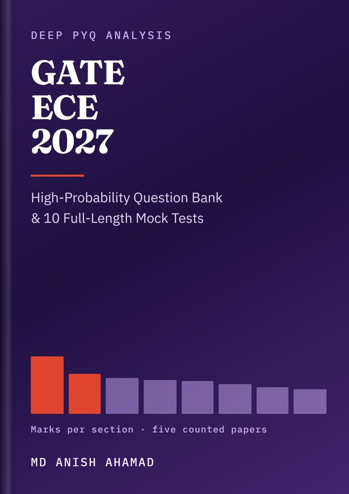
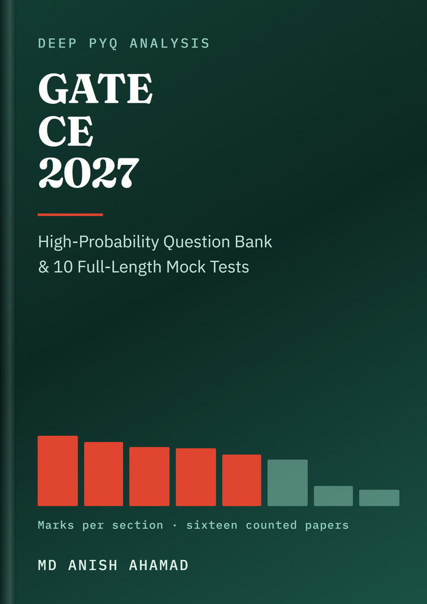
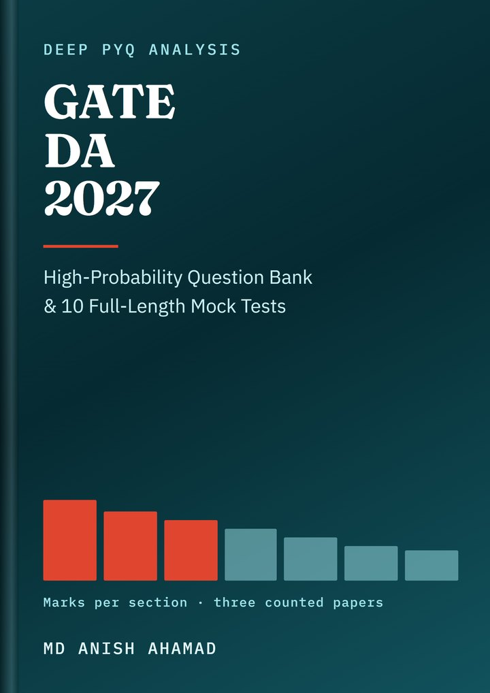
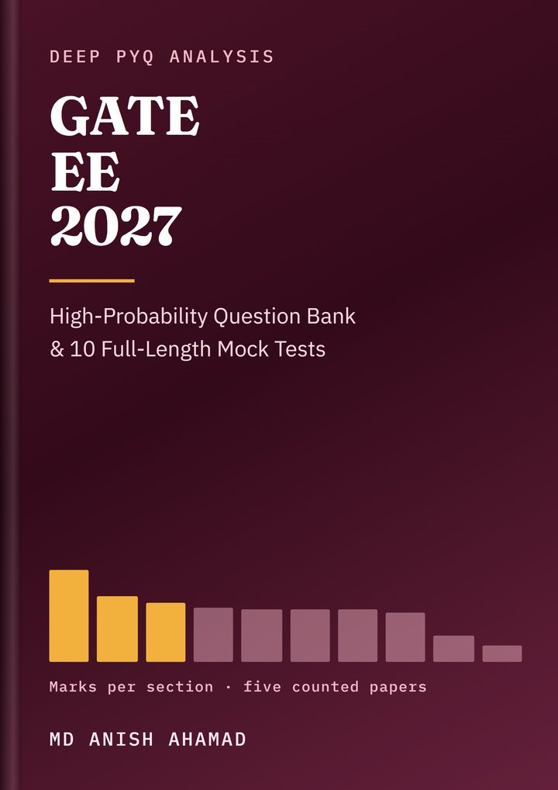
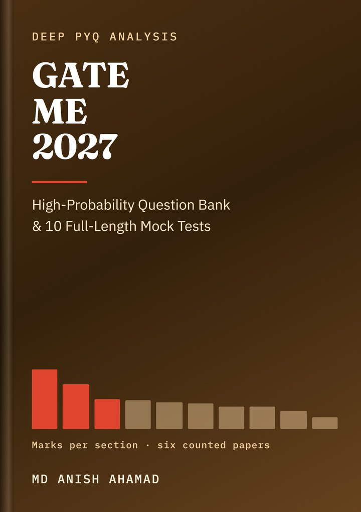

GATE preparation built from the papers, not from a syllabus list
Every GATE Guide book is written by counting real question papers, one question at a time. Six are out — GATE CSE, GATE ECE, GATE EE, GATE ME, GATE Civil and GATE DA — and 125 free guides cover the syllabus, the topics and the strategy for nothing at all.


Six branches, six books. Pick yours.
Each book counts its own branch's papers question by question, so none is a copy of another with the subject names changed. Read the free preview of yours before you pay.
Practise in the real GATE exam interface
Ten new full-length mock tests per branch on the 2027 syllabus, in an interface built like the official one: the timer, the question palette, the MSQ and NAT keypad and the virtual calculator. You get an instant score with a section- and subject-wise analysis and a full worked solution for every question. ₹250 per branch, valid until 31 March 2027.
- 65 questions, 100 marks, 180 minutes
- MCQ with negative marking, MSQ and NAT
- Answered and marked-for-review counted, as in GATE
- Solutions with the trap behind every wrong option
Every formula, branch by branch
34 free formula sheets: one for each branch, and one for each big subject under it, every formula with a worked example and the trap that costs marks.
We count the papers. Then we write the book.
The organisers have never published a marks breakdown, so every weightage table you have seen is somebody's count of a past paper — and when those counts are checked against the papers, they do not hold. So we do the counting ourselves, in the open, and show the working.
Real GATE papers are read one question at a time. Each question is assigned to a section and a topic, and every assignment is checked against that year's official answer key — 65 questions, 100 marks, General Aptitude at exactly 15, or the count does not close.
The counts become a concept map with question numbers attached, so every claim names a year and a question you can go and check. Where a topic has never been asked, the book prints that too instead of inventing a history for it.
Every question is written for the book, never copied. Every number in it is computed rather than estimated, and every wrong option is the output of one specific mistake — which the solution names, so you learn what you did rather than only that you were wrong.
Nothing here is a guess dressed as a fact. Statements are labelled: what a paper contains, what the author reads in it, and what is a prediction about 2027.
What each of the six books is built on
Same method, different evidence: every branch has its own record of papers, and each book says exactly how many it counted.
GATE CSE 2027 — Deep PYQ Analysis & High-Probability Question Bank
Computer Science & Information Technology
- 27 years of GATE CS papers analysed topic by topic
- Every 2026 → 2027 syllabus change, checked against the official PDF
- Four confidence scores and the PYQ years behind every question
- 20-week roadmap, do-not-skip checklist and last-minute sheet
GATE ECE 2027 — Deep PYQ Analysis & High-Probability Question Bank
Electronics & Communication Engineering
- Five GATE EC papers counted question by question against their official answer keys
- Because the published weightage tables do not survive checking — Section 16 shows the arithmetic
- Every 2026 → 2027 syllabus change mapped from the two official PDFs
- The 78 concepts that recur, ranked, with a 20-week plan and a last-minute sheet

GATE CE 2027 — Deep PYQ Analysis & High-Probability Question Bank
Civil Engineering
- All sixteen GATE Civil papers, 2019 to 2026, counted question by question
- Both sets in every year, because Civil is examined as two papers
- Every 2026 → 2027 syllabus change, and which new topics were already examined
- The hundred questions to work first, a what-not-to-skip chapter and a last-minute sheet

GATE DA 2027 — Deep PYQ Analysis & High-Probability Question Bank
Data Science & AI
- All three GATE DA papers, 2024 to 2026, counted question by question — every DA paper there has been
- Three papers set by three different institutes, and how far each section moved between them
- The 2026 and 2027 syllabus PDFs compared phrase by phrase: no change of content
- 257 practice questions in eight subject chapters, the hundred to work first and a last-minute sheet

GATE EE 2027 — Deep PYQ Analysis & High-Probability Question Bank
Electrical Engineering
- All five GATE EE papers, 2022 to 2026, counted question by question against their official answer keys
- The 2026 and 2027 syllabus PDFs compared phrase by phrase: no change of content, one spelling corrected
- 264 practice questions across eleven subject chapters, each with a worked solution
- The hundred questions to work first, a what-not-to-skip chapter, a revision plan and a last-minute sheet

GATE ME 2027 — Deep PYQ Analysis & High-Probability Question Bank
Mechanical Engineering
- All six GATE ME papers, 2022 to 2026, counted question by question — both sets of 2022
- Every 2026 → 2027 syllabus change, mapped from the two official PDFs, new headings included
- 292 practice questions across eleven subject chapters, each with a worked solution
- The hundred questions to work first, a what-not-to-skip chapter, a revision plan and a last-minute sheet

Read real pages before you buy
Every book has a free preview: real pages taken unchanged from the full PDF, so you can judge the quality yourself. No sign-up.
- Title page, full contents and preface
- Executive summary
- What changed in the 2027 syllabus
- How the past papers were counted, and what the counts show
- A sample subject chapter, with questions and their four confidence figures
- Mock Test 01: first pages, answer key and the first worked solutions
- The first pages of the last-minute sheet
Free GATE guides
125 free guides so far: 15 exam · 8 syllabus · 10 analysis · 65 subjects · 27 strategy.
Just published
A new edition every year
Each edition is rebuilt for the next exam: the latest paper added to the analysis, the new syllabus checked line by line, and fresh mock tests.
Daily GATE posts
Exam updates, syllabus notes and topic breakdowns on Instagram.
Questions about a book: WhatsApp +91 70339 35778 or contact us. Every book is a PDF, downloaded once per purchase, so save it when it opens.